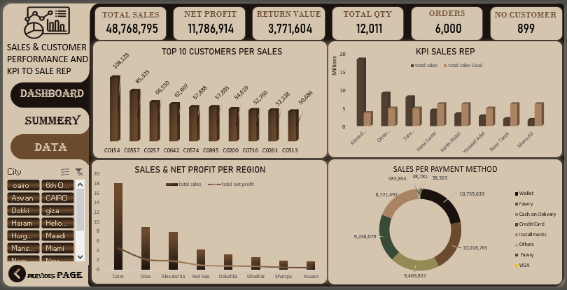

From Raw Sales Data to a Decision-Ready Dashboard
An end-to-end, hands-on sales analytics project showcasing the work behind reliable reporting: diagnosing data-quality issues, cleaning and preparing records, validating results across outputs, and presenting business performance through a two-page Excel dashboard.
Project at a glance
A practical workflow using synthetic sales data, covering source-data assessment, cleaning decisions, validation, analysis, and dashboard reporting.
Amounts are shown without a currency symbol because the dataset does not specify a reporting currency. The dataset is synthetic and intended for portfolio demonstration.
What I did
Data preparation
- Inspected source records and profiled missing values and duplicate rows.
- Removed 80 duplicates, preparing 6,000 records from 6,080 source rows.
- Handled missing values in the tracked analytical fields.
- Applied consistent business rules to rating values and delivery-duration calculations.
Validation & reporting
- Validated the cleaned output for duplicate records and missing values in tracked fields.
- Reconciled sales and profit totals across the cleaned CSV, dashboard JSON, and public Excel workbook.
- Built a two-page Excel dashboard supported by pivot-based analysis.
- Prepared anonymized public files while keeping private working files out of the portfolio.
Business questions explored
- How do sales and profit vary by month and year?
- Which channels and product categories contribute most to performance?
- How does performance differ across governorates?
- What does the order-status mix reveal, including returned orders?
- How can the results be communicated through a clear dashboard?
Dashboard preview
Page 1 · Sales Overview

Page 2 · Customers & Operations

Download project files
Explore the public dashboard, anonymized source sample, and cleaned analytical dataset.
Original working files and unredacted source data are not published.
Tools & practical skills
Microsoft Excel · Data Cleaning · Missing-Value Handling · Duplicate Detection · Data Validation · Pivot Tables · Dashboard Reporting · Business Analysis